💾Retro Loader
開機圖形選單，cover-flow 封面列出 SD 卡上的韌體，選一個寫進 flash 再交棒執行。自己只佔 flash 前 16 KB，換韌體不必再拔電按 BOOTSEL。
rp2040-retro-loader →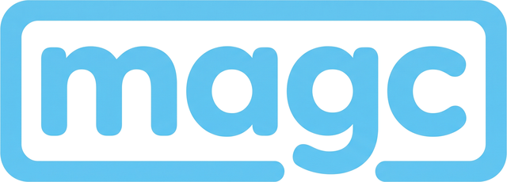
掌機系列 · 第二代 · Makecode Arcade Game ConsoleMAGC 是一台以 RP2040 為核心的開源掌機。它從 MakeCode Arcade 積木遊戲起家，現在同一塊板子可以跑 Doom、紅白機模擬、Apple II 電腦、電子字典、長波收音機，也有專門為它寫的原生遊戲。開機從 SD 卡選單挑一個，就換成另一台機器。
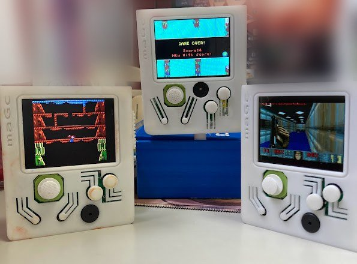
第一代 Scratch Boy 想讓小朋友把自己做的遊戲拿在手上玩，但 Raspberry Pi 跑整個瀏覽器太耗電，電池撐不住。
MAGC 換成一顆便宜的 RP2040 微控制器：通電即用、沒有作業系統要開機、電池吃得很省。教育的路線也從 Scratch 換成微軟的 MakeCode Arcade，一樣是拖拉積木做遊戲，但可以直接編譯成在微控制器上跑的韌體。
後來發現這塊板子的潛力遠不止於此：超頻到 250 MHz 之後，它跑得動 Doom、全速 NES，甚至一台完整的 Apple II。
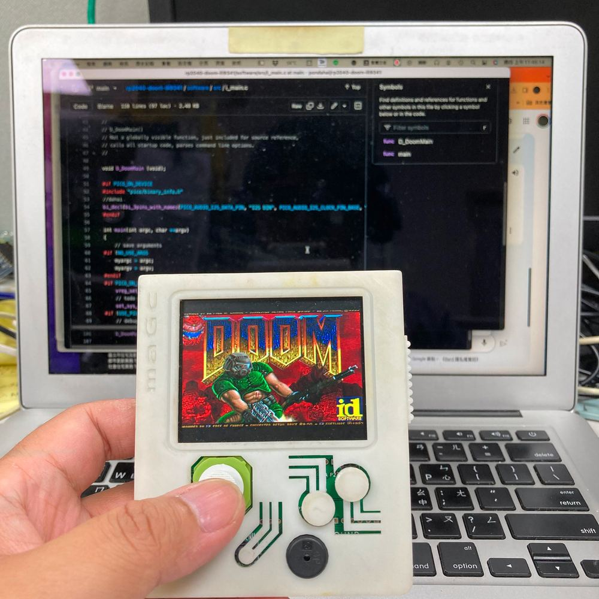
能「一塊板子跑所有韌體」的關鍵，是螢幕、按鍵矩陣與 SD 卡的接腳定義在每個專案之間完全一致。接腳表只有一份，所有子專案都以它為準。
| 微控制器 | Raspberry Pi Pico（RP2040 雙核 Cortex-M0+），可超頻到約 250 MHz |
|---|---|
| 螢幕 | 2.4" / 2.8" ILI9341 SPI TFT，320×240，SPI 最高跑到 62.5 MHz |
| 按鍵 | 74HC595 + 74HC165 移位暫存器掃描 8×8 矩陣，只用 3 支 GPIO，順便驅動 LED |
| 儲存 | SPI SD 卡：放韌體、選單封面、ROM、存檔、字典資料 |
| 音效 | 1-bit PWM → RC 低通 → PAM8403 D 類放大 → 4Ω / 8Ω 喇叭 |
| 選配 | Meshtastic LoRa 節點（UART），變成離網文字終端機 |
| 外殼 | 3D 列印，多次改版 |
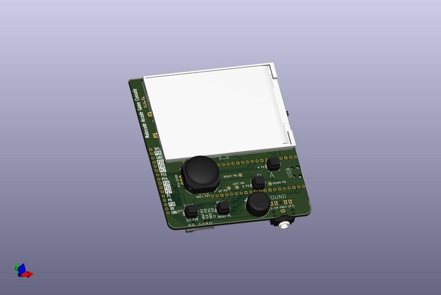
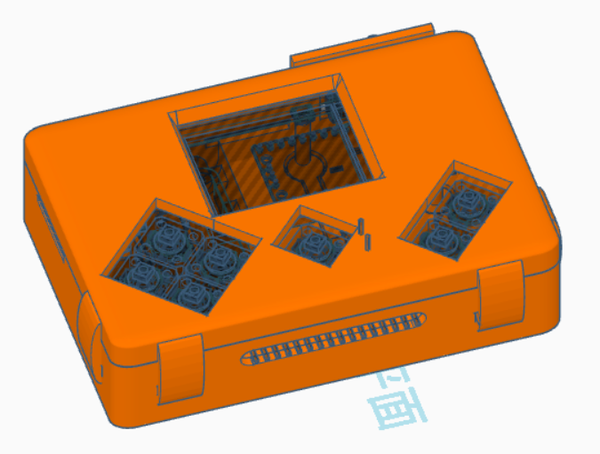
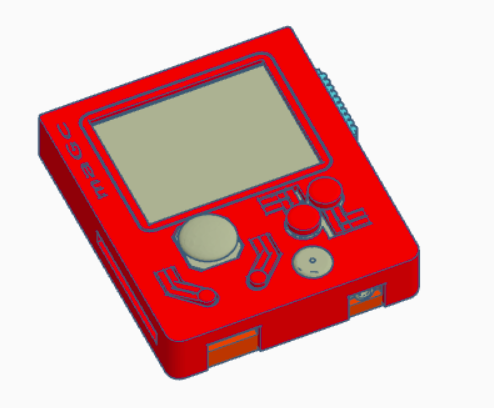
每個專案都是獨立的韌體，燒成一支 .uf2。可以單獨燒進掌機，也可以全部放進 SD 卡，開機由載入器的封面選單挑一個執行。
開機圖形選單，cover-flow 封面列出 SD 卡上的韌體，選一個寫進 flash 再交棒執行。自己只佔 flash 前 16 KB，換韌體不必再拔電按 BOOTSEL。
rp2040-retro-loader →把掌機的 SD 卡變成 USB 隨身碟。搭配電腦端腳本，不拔卡就能把新韌體推進去，甚至遠端叫掌機直接啟動。
rp2040-retro-sdmount →編譯好的整包成品：載入器、跳板、各專題韌體、SD Mount 與選單封面，附 sha256 校驗，下載就能用。
rp2040-handheld-bundle →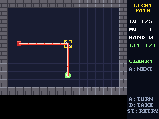
轉動鏡子把雷射導進所有接收器的益智遊戲。第一款原生遊戲，也是 SDK 的完整範例；每一關的可解性都由電腦端測試保證。
rp2040-lightpath →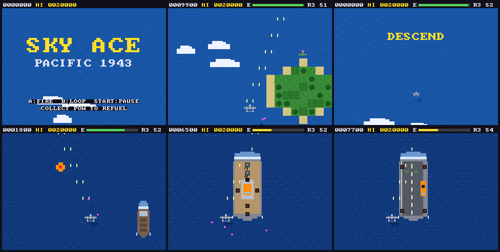
致敬 1943 的直向捲軸空戰：能量條、翻滾閃避、空戰與船艦關輪流，魔王是戰艦與航空母艦。
rp2040-skyace →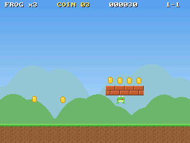
橫向捲軸平台跳躍：踩甲蟲、收金幣、抓終點旗。關卡是 ASCII 字串，改字元就能改地形。
rp2040-hopper →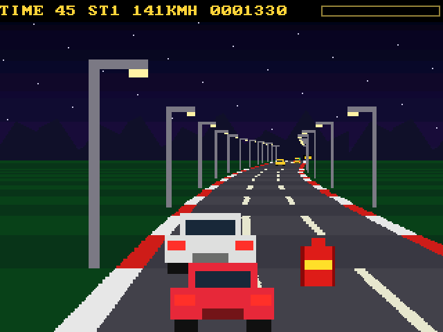
偽 3D 夜間公路賽車，五關、氮氣加速、可自訂賽道。每幀全畫面重畫，穩定 30 fps。
rp2040-nightrun →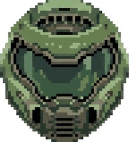
🔫Doom以 rp2040-doom 為基礎，改成把畫面推到 ILI9341 SPI 螢幕，並加上 MAGC 的按鍵掃描。
rp2040-doom-ili9341 →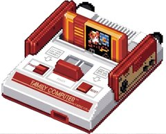
🕹️InfoNES紅白機模擬器，SD 卡選 ROM、支援 FDS，選單有中文字型。
rp2040-ili9341-infones →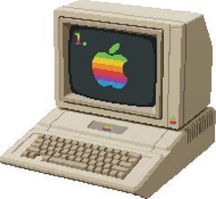
🍎PicoApple2Apple II 模擬器：Rust 寫 6502 與 Disk II 核心、C++ 雙核渲染，週期精確的喇叭音效，讀寫 .DSK。
英漢／漢英字典，注音輸入。發音沒用錄音，而是 1980 年代電子字典的共振峰合成，整個合成器約 7 KB。
rp2040-retro-dict →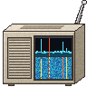
📻SDR 收音機用 ADC 直接取樣的 0–250 kHz 長波收音機：頻譜、瀑布圖、AM/CW/SSB 解調，還能解中國 BPC 與日本 JJY 的電波授時碼。
rp2040-retro-sdr →在掌機上用注音打中文、存到 SD 卡的文件編輯器。開發中。
rp2040-retro-editor →接上電腦就是一把 USB 自訂機械鍵盤，同一組 595/165 按鍵矩陣。
pico_keyboard →嵌入式注音輸入法加上 Meshtastic，經 LoRa 收發中文訊息，不靠手機網路。
pico_keyboard_ime_terminal →量出 8×8 矩陣座標與實體鍵的對應，硬體接腳表裡的鍵盤真值表就是用它測的。
PicoApple2-KeyboardTester →MAGC 名字的由來。支援微軟 MakeCode Arcade，拖拉積木就能做出在掌機上跑的遊戲；電路圖、PCB 各版本與外殼 STL 都在這裡。
makecode_arcade_console →寫新韌體的起點，目前是私人專案。它把每個韌體都要重寫一次的部分抽成共用模組：螢幕（16-bit SPI + DMA 雙緩衝）、D-pad、PWM 音效、SD 卡讀寫。
.uf2。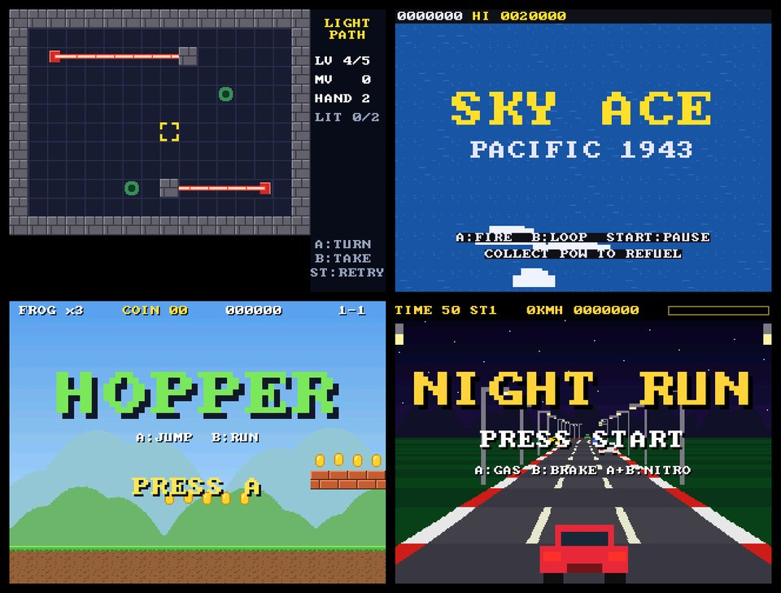
.uf2。BOOTSEL 再插上 USB，電腦會出現 RPI-RP2 隨身碟。.uf2 拖進去，掌機自動重開就是新機器。python retro_sync.py push RetroFoo.uf2
python retro_sync.py run INFONES_STANDALONE
python retro_sync.py push RetroFoo.uf2 --run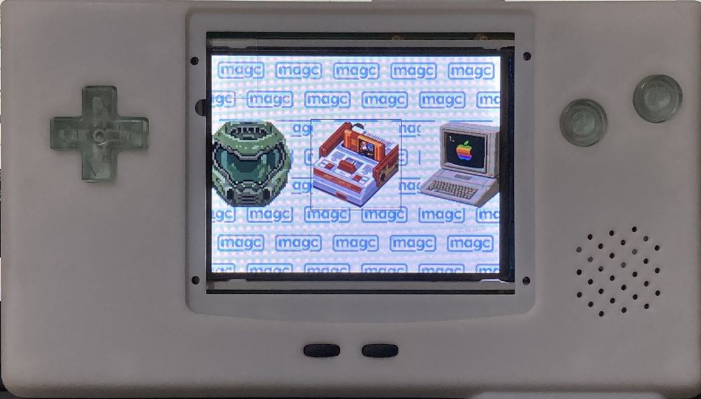
第一版電路板，跑 MakeCode Arcade 積木遊戲。MAGC 誕生。
移植 InfoNES 紅白機模擬與 Doom，確認這塊板子的效能天花板遠比預期高。
主板改版到 v2.3 / v2.4，外殼改成印有 maGC 字樣的版本。
同一組按鍵矩陣長出機械鍵盤與注音離網終端機。
PicoApple2：Rust + C++ 的 Apple II 模擬器。
建立生態系總綱，統一接腳表，定下「同一塊硬體、燒不同韌體」的方向。
載入器選單、整包成品、電子字典、注音編輯器、SDR 收音機陸續上線。
SD Mount 與 Retro SDK 完成；接著三天內寫出 LIGHT PATH、SKY ACE、HOPPER、NIGHT RUN 四款原生遊戲。